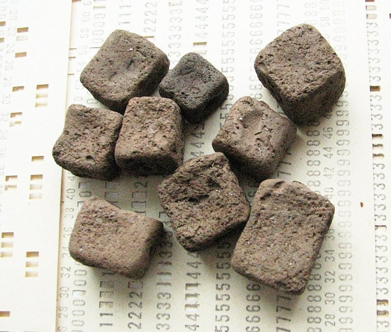
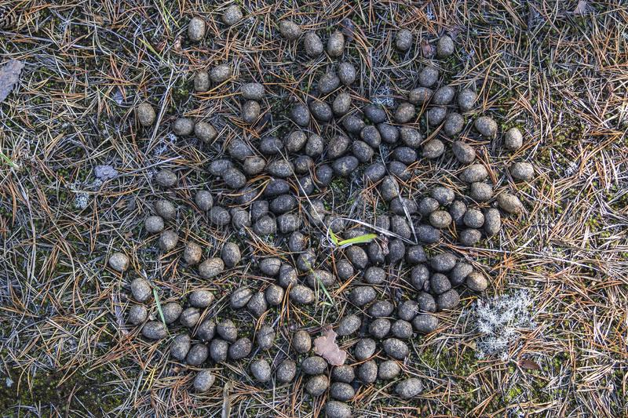
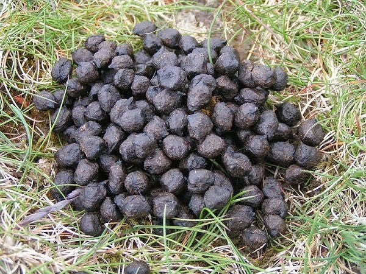

Вомбатовые или вомбаты (лат. Vombatidae) — семейство сумчатых млекопитающих из отряда двурезцовых, обитающих в Австралии.
Вомбаты — роющие норы травоядные животные, внешне напоминающие маленьких медведей или гигантского хомяка.
Вомбат
Внешне вомбат напоминает медвежонка или очень крупного хомяка.
По строению тела и отдельных деталей организма он имеет много общего с коалой,
но в действительности их родство достаточно отдалённое.
Длина тела вомбата — от 70 до 130 см, вес — от 20 до 45 кг.
Самым крупным из ныне живущих является широколобый вомбат.
Туловище толстое, устроено компактно. Голова большая, производит впечатление слегка расплющенной с боков, глаза маленькие, уши округлые, небольшие, прижаты к голове. Нос у обыкновенного вомбата — голый, у остальных видов — волосатый. Хвост короткий. Конечности короткие и сильные, на каждой из них пять пальцев, из которых внешние четыре увенчаны большими когтями, приспособленными для копания земли. Шерсть тёмная, серых или коричневых оттенков, в зависимости от вида.
Челюсти и зубы вомбатовых проявляют сходство с грызунами. В верхнем и нижнем ряду у вомбатов имеется по паре передних режущих зубов. Жевательные зубы построены весьма просто, угловые зубы отсутствуют. У вомбатовых наименьшее количество зубов среди сумчатых — 12.
У вомбатов острый слух и обоняние, но довольно слабое зрение. Несмотря на внешнюю неуклюжесть, они очень быстрые: спасаясь от опасности, вомбат может легко влезть на дерево, нырнуть в водоём или убежать. Могут бежать со скоростью до 40 км/ч, а на коротких дистанциях достигают скорости в 60 км/ч.
Вомбатовые обитают в южной и восточной части Австралии, в штатах Южная Австралия, Виктория, Новый Южный Уэльс, Квинсленд и Тасмания. Распространены в различных местообитаниях, но нуждаются в подходящей для рытья нор почве. Короткошёрстные особи вомбатовых проживают в штатах Новый Южный Уэльс и Южная Австралия, Виктория.
Меньшие по размерам подвиды живут на островах Тасмания и Флиндерс. Они занимают территории с удобными для рытья нор почвами в лесах и редколесьях, пустошах и альпийских зонах.
Длинношёрстные вомбатовые живут на юго-востоке штата Южная Австралия, на западе штата Виктория, юго-западе Нового Южного Уэльса, в центре и на юге Квинсленда. Они выбирают места с лесной растительностью, заросшие кустарником, открытые пространства с полузасушливым климатом, а южные виды – в засушливых регионах, в лесах, кустарниковых степях.
Вомбаты своими острыми когтями вырывают в земле жилые пещеры, которые иногда образуют сложные туннельные системы. Как правило, большинство из этих систем достигают около 20 метров в длину и 3,5 метров в глубину. Если участки отдельных особей пересекаются, пещеры могут в различное время использоваться разными особями. Вомбаты активны ночью, когда выходят на поиски пищи. Днём они отдыхают в своих убежищах.
У взрослого вомбата почти нет естественных врагов. Одним из немногих является ввезённый человеком динго. Кроме того, опасность может представлять тасманийский дьявол. Задняя часть тела вомбата чрезвычайно тверда из-за толстой кожи, хрящей и костей. В случае опасности они могут, повернувшись задом, блокировать свою нору и отразить большинство нападающих либо раздавить их конечности о стены своей жилой пещеры. В задней части спины, на тазовых костях, у вомбата есть нечто вроде щитка, защищающего его при нападении сзади. Он наносит также сильные удары головой — бодается, как баран или козёл. Если собака залезает в его нору, он поджидает её, не сходя с места, а затем старается загнать в угол, к стенке норы, и там задушить при помощи щитка. Гораздо чаще в смерти вомбата бывает виноват человек: в частности, много вомбатов гибнет под колёсами автомобилей. В областях, где воздействие человека невелико, численность вомбатов определяется наличием подходящего корма.
Площадь участков вомбатов варьирует в зависимости от внешних условий от 5 до 25 Га. Территория помечается экскрементами и построенными жилищами, и защищает свой участок вомбат подчас довольно агрессивно. При виде незваного гостя самцы угрожающе качают головой из стороны в сторону и мычат. Зачастую этого бывает достаточно, чтобы прогнать вторгнувшегося. Однако иногда дело доходит до поединков, в которых вомбаты могут нанести друг другу серьёзные раны.
Вомбаты едят молодые побеги трав. Иногда в пищу употребляются также корни растений, мхи, грибы и ягоды. Разделённая верхняя губа позволяет вомбатам очень точно выбирать то, что они едят. Благодаря ей передние зубы могут доходить прямо до земли и срезать даже самые маленькие побеги. Важную роль при выборе пищи у активных ночью вомбатов играет обоняние. Обмен веществ у вомбатов весьма медленный и эффективный. Чтобы переварить еду, им необходимо до 14 дней. Вомбаты — самые экономные потребители воды из всех млекопитающих после верблюда: им достаточно всего 22 мл воды на кг массы тела в сутки. Даже такие прекрасно приспособленные к условиям жизни в Австралии животные, как представители семейства кенгуровых, расходуют воды вчетверо больше. Вомбаты плохо переносят холод.
Вомбаты размножаются на протяжении всего года везде, кроме засушливых регионов, где их размножение скорее сезонное. Сумки у самок повёрнуты назад, чтобы при копании в них не попадала земля. Несмотря на то, что у самки имеются два соска, одновременно рождается и воспитывается лишь один детёныш. Потомство от шести до восьми месяцев растёт в сумке матери и в течение следующего года остаётся вблизи. Половой зрелости самцы достигают в возрасте двух лет, самки — трёх лет. Продолжительность их жизни в природе достигает 15 лет, в неволе они иногда доживают и до 25. Старейший зарегистрированный вомбат дожил в неволе до 34 лет; второй долгожитель — Патрик из Балларатского парка дикой природы — прожил более 31 года и скончался 18 апреля 2017 года.
Пример фекалий разных животных
| Животные | Форма | Изображение |
|---|---|---|
| Вомбат | Квадрат |  |
| Олень | Картошка |  |
| Козёл | Горошик |  |